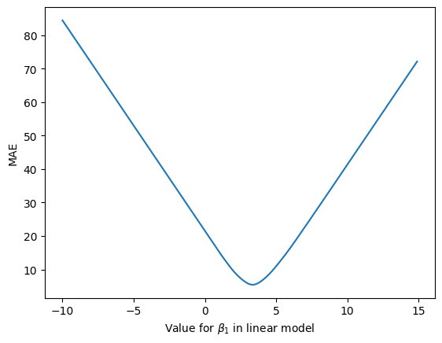
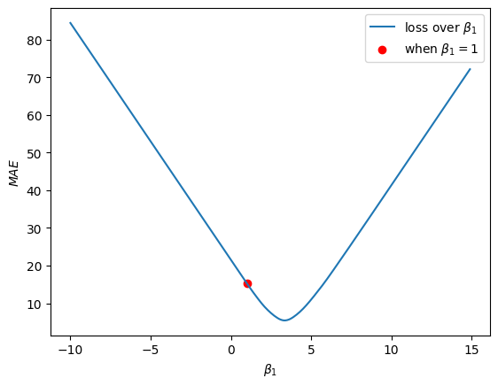
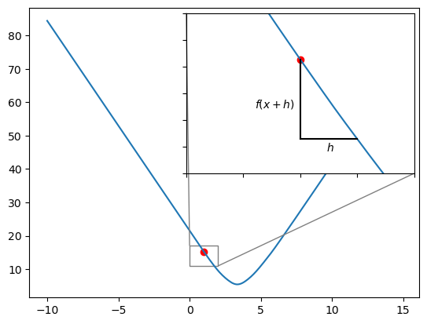
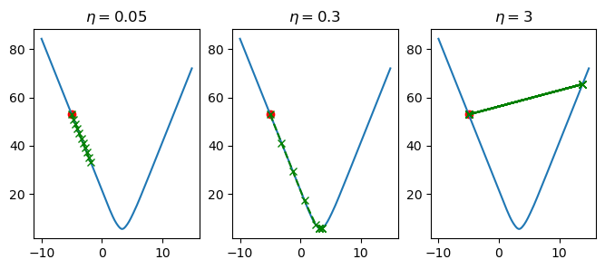
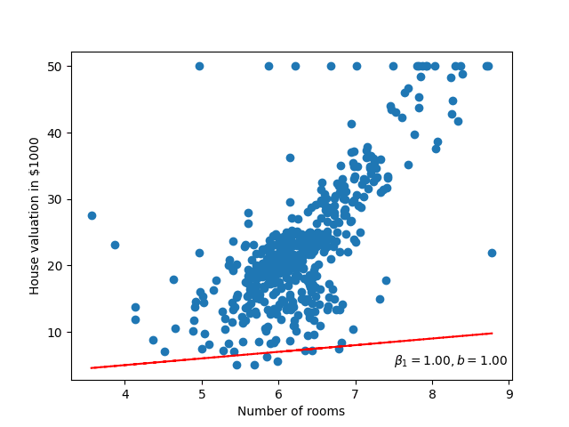

Linear Models
Lecture 2
Supporting example
Let’s have a look at how we would use this linear model with one of the datasets: The Boston housing prices.

Let’s fit a linear model
We have seen that there seems to be some correlation between the number of rooms and the house price. I.e. we can use the number of rooms of the house to get the estimated price. To get an estimated price we’ll use our linear model:
\[ y = \beta_0+\beta_1 x \]
In this case, \(x\) will be the number of rooms. But what values should we set for \(\beta_0\) and \(\beta_1\)? Or put another way, what is optimal value for our model parameters.
We’ll return to the question of optimal later, but for now, let’s just select some random values!
\[\begin{aligned} \beta_0 = 1 \\ \beta_1 = 1 \end{aligned} \]

Well that doesn’t look very good, it could be ‘fit’ better to what we’re seeing in the scatter plot! I wonder how wrong the linear model is – how incorrect our predicted house prices are?
Getting better model parameters
Okay, so we made our initial guess at the model parameters (random values for \(\beta_0, \beta_1\)), and these weren’t very good. We were incorrectly guessing the house value by $15,000. So how do we get better values?
Well if we visualise how badly we do vs the value for \(\beta_1\) we get the following:

In figure 44, we see that as we change the \(\beta_1\) parameter, the mean absolute error (MAE), i.e. the average difference between the predicted house prices and the true house prices, changes. Ideally, we would like the error or loss to be as low as possible. In this case, when \(\beta_0 = 1\) the lowest possible loss we can hope to achieve with the linear model is ~ $5,500.
But what value for \(\beta_1\) gets us this lowest value for the loss? Looking at the graph, we see that the lowest point on the loss curve is somewhere between 0 and 5. Maybe even 4? While we could look at the curve and pick these parameter values, we’re going to use a better method – one that give us an optimal value for this loss curve automatically.
We’re going to look at the method called Gradient Descent.
If we visualise our loss curve again, and visualise where \(\beta_1 = 1\) is on this curve, we will see:

So we want this rot dot to move down the loss curve and reach the bottom of the curve. Using the Gradient Descent algorithm, we’re going to take very small steps down the loss curve.

To determine which way is up, and which way is down the curve, we use the Gradient of the curve (hence Gradient Descent). We compute the gradient using finite differences method:
\[ \Delta = \frac{f(x+h) - f(x)}{h} \]
where \(f(x)\) is the loss when \(\beta_1\) takes on the value of \(x\). \(h\) is a very small value.

If we select \(h = 0.5\) then we will have the formula:
\[ \Delta_{\beta_1} = \frac{L(\beta_1 + 0.5) - L(\beta_1)}{\beta_1} \]
where \(L\) represents our loss function, MAE. If we calculate this we have:
\[\begin{aligned} \Delta_{\beta_1} &= \frac{L(\beta_1 + 0.5) - L(\beta_1)}{h} \\ &= \frac{L(1.5)- L(1)}{0.5} \\ &= \frac{12 - 15}{0.5} \\ &= -6.0 \end{aligned} \]
Given that the gradient is a negative number, we know that the curve is going down/decreasing. So we will want to move \(\beta_1\) in this direction – we want to move \(\beta_1\) so that the loss decreases.
\[ \overline{\beta_1} = \beta_1 - \eta \Delta_{\beta_1} \]
If we plug in the numbers we’ve calculated for when \(\beta_1 = 1\) we get and \(eta = 0.5\):
\[\begin{aligned} \overline{\beta_1} &= \beta_1 - \eta \Delta_{\beta_1} \\ &= 1.0 - (0.5 * -6.0) \\ &= 1.0 - (-3.0) \\ &= 4.0 \end{aligned} \]
Our new value for the \(\beta_1\) parameter (\(\overline{\beta_1}\)) is computed by taking its original value and subtracting the gradient modulated/multiplied by \(\eta\). \(\eta\) in this case is what will allow us to take our small steps. It is important to set \(\eta\) to a suitably small value, as high values for \(\eta\) will cause the Gradient Descent to behave erratically, and even, make our loss worse!

In figure 65, we’ve varied the value of \(\eta\) and computed 10 steps of updating the \(\beta_1\) parameter in our linear model. When \(\eta=0.05\), we see that \(\beta_1\) is slowly being updated in a way that is causing our loss to decrease, but it is more so slowly that we don’t reach the optimal value for \(\beta_1\). When \(\eta=3\), each change in \(\beta_1\) is too large, so we over-shoot the optimal value, and end up bouncing back and forth without ever improving. Finally, when we set \(\eta=0.3\), the changes in \(\beta_1\) are sufficiently large enough such that we reach the global minima in time, but they are also small enough so that we don’t over-shoot this same minimum.
If we then apply the Gradient Descent algorithm to both parameters of the linear model \(\beta_0, \beta_1\), then we can find the optimal trend line for this data. Furthermore, visualising this will look something like figure 68.
